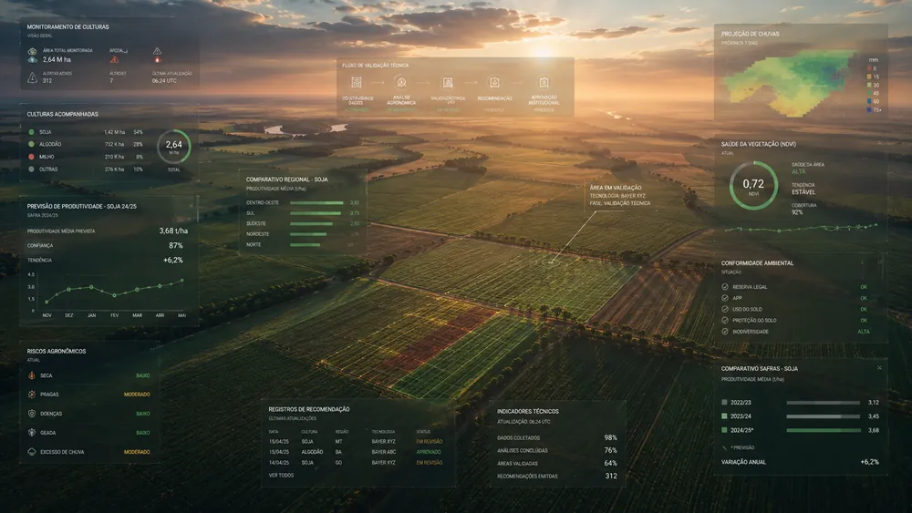

Bayer Platform
Bayer
Plataforma de Dados AgrÃcolas para análise técnica de culturas, validação de tecnologias e licenciamento de soluções no agronegócio de soja e algodão. Agricultural Data Platform for technical crop analysis, technology validation, and licensing of agricultural solutions in soy and cotton agribusiness.
Dados agrÃcolas como
estrutura de decisão.
Agricultural data as
decision structure.
A plataforma organizou resultados de testes, dados técnicos e registros institucionais em torno da cultura agrÃcola como unidade principal de análise. The platform organized test results, technical data, and institutional records around the crop as the primary unit of analysis.
A validação de tecnologias agrÃcolas depende de dados técnicos complexos. Agricultural technology validation requires careful reading of technical data.
Especialistas analisam desempenho por cultura, comportamento regional, resultados de testes e histórico de safras antes de recomendar o uso de uma tecnologia. Specialists analyze performance by crop, regional behavior, test results, and crop history before recommending technology usage.
Esse processo envolve diferentes áreas — especialistas agronômicos, equipes comerciais, gestão técnica e áreas institucionais — cada uma com sua perspectiva e seus próprios registros. Antes da plataforma, essas análises aconteciam de forma fragmentada. Os dados eram consultados em sistemas distintos, as comparações eram feitas em planilhas e as decisões eram registradas de forma manual em relatórios fÃsicos ou e-mails.
This process involves different areas — agronomic specialists, commercial teams, technical management, and institutional areas — each with their own perspective and records. Before the platform, these analyses were fragmented. Data was queried across separate systems, comparisons were made in spreadsheets, and decisions were manually logged in physical reports or email chains.
- Especialistas agronômicosAgronomic specialists
- Equipes comerciaisCommercial teams
- Gestão técnicaTechnical management
- Ãreas institucionais (CADE)Institutional areas (CADE)
Antes do sistema, cada etapa era registrada isoladamente. Before the system, each stage was recorded separately.
Informações sobre uma única validação de tecnologia podiam estar distribuÃdas em planilhas locais, cadeias de e-mail e sistemas legados de diferentes áreas. Information about a single technology validation could be distributed across local spreadsheets, email chains, and legacy systems from different areas.
Planilhas locais de comparação controlavam as microrregiões. Relatórios técnicos em PDF consolidavam os pareceres. Nenhum desses registros compartilhava uma estrutura de dados comum, o que quebrava a continuidade do processo e dificultava a rastreabilidade posterior exigida institucionalmente.
Local comparison spreadsheets controlled micro-regions. Technical PDF reports consolidated recommendations. None of these records shared a common data structure, breaking process continuity and hindering the subsequent traceability required institutionally.
- Planilhas locais de comparaçãoLocal comparison spreadsheets
- Relatórios técnicos em PDFTechnical PDF reports
- Pareceres e aprovações em e-mailsOpinions and approvals in emails
- Ausência de trilha de auditoriaLack of audit trail
O custo estava em montar o contexto operacional de análise. The cost was in assembling the operational context for analysis.
A fragmentação tinha consequências claras: perda de tempo na preparação dos dados, risco de pareceres baseados em dados desatualizados e variabilidade nos critérios de aprovação de tecnologias. Fragmentation had clear consequences: time lost in data preparation, risk of opinions based on outdated data, and variability in technology approval criteria.
O problema não era a falta de dados — o time comercial e os laboratórios geravam dados de alta qualidade. O gargalo estava na energia mental gasta pelos especialistas para cruzar as safras anteriores com as condições de microrregiões e exigências de patentes do CADE. A validação dependia de um esforço manual recorrente que atrasava o ciclo de licenciamento.
The problem was not lack of data — commercial teams and labs generated high-quality data. The bottleneck was the mental energy spent by specialists crossing previous seasons with micro-region conditions and CADE patent requirements. Validation depended on a recurring manual effort that delayed the licensing cycle.
Modelagem de fluxos e design do ecossistema de validação. Workflow modeling and validation ecosystem design.
Atuei desde o mapeamento de processos agronômicos e reuniões com especialistas até o design da interface e arquitetura de navegação. Colaborei de perto com Maria Antonieta Santos (UX Researcher) e o time de engenharia para estruturar o fluxo de validação. I worked from mapping agronomic processes and interviewing specialists to designing the interface and navigation architecture. I collaborated closely with Maria Antonieta Santos (UX Researcher) and the engineering team to structure the validation flow.
Arquitetura centrada na cultura.Crop-centric architecture.
Mapeei e propus organizar todas as visões de dados e decisões em torno da cultura agrÃcola selecionada (soja, algodão).Mapped and proposed organizing all data views and decisions around the selected agricultural crop (soy, cotton).
Estruturação do fluxo de pareceres.Opinion workflow structuring.
Desenhei um assistente de parecer técnico que divide o julgamento em etapas claras e dependências de validação.Designed a technical opinion assistant that divides judgment into clear stages and validation dependencies.
Módulo de comparação regional.Regional comparison module.
Criei uma interface de comparação lado a lado para cruzar a produtividade da tecnologia em diferentes microrregiões.Created a side-by-side comparison interface to cross technology productivity across different micro-regions.
Integração de regras do CADE.CADE rules integration.
Posicionei as travas regulatórias e restrições de patentes no inÃcio do fluxo para evitar análises de tecnologias inválidas.Positioned regulatory blocks and patent constraints at the start of the flow to prevent analysis of invalid technologies.
Walkthrough de auditoria.Audit walkthrough.
Desenhei uma linha do tempo documental que mostra quem, quando e com base em qual dado uma tecnologia foi aprovada.Designed a documentary timeline showing who, when, and based on which data a technology was approved.
Densidade de dados controlada.Controlled data density.
Colaborei no design de componentes que exibem dados densos sem poluição visual, mantendo a precisão técnica.Collaborated in designing components that display dense data without visual clutter, maintaining technical accuracy.
Limites regulatórios e variabilidade agronômica. Regulatory limits and agronomic variability.
- Variabilidade técnica: O sistema precisava suportar diferentes indicadores para culturas distintas (soja, algodão) sem perder clareza visual. Technical variability: The system had to support different indicators for distinct crops (soy, cotton) without losing visual clarity.
- Regras do CADE e Patentes: Validações institucionais de patentes e restrições regulatórias precisavam ser integradas como travas rÃgidas no fluxo. CADE & Patent rules: Institutional patent validations and regulatory constraints had to be integrated as hard blocks in the flow.
- Manutenção de profundidade: Especialistas exigiam acesso aos dados numéricos granulares de safras passadas; ocultar dados em prol do design era inaceitável. Maintaining depth: Specialists demanded access to granular numeric data from past seasons; hiding data for the sake of design was unacceptable.
- Rastreabilidade de Decisão: Todo parecer precisava ser imutável e associado ao lote de dados utilizado para a tomada de decisão. Decision Traceability: Every opinion had to be immutable and linked to the data batch used for decision-making.
A cultura agrÃcola como centro do modelo mental. The crop as the core of the mental model.
A grande mudança estrutural foi desenhar a plataforma em torno da cultura avaliada. O especialista seleciona a soja ou o algodão e tem todas as ferramentas e fluxos organizados sob esse guarda-chuva. The major structural shift was designing the platform around the evaluated crop. The specialist selects soy or cotton and has all tools and workflows organized under that umbrella.

Telas e fluxos da plataforma de licenciamento e validação. Screens and flows of the licensing and validation platform.
Abaixo, a sequência de interfaces que estruturam o gerenciamento e validação regulatória de tecnologias e safras. Below, the sequence of interfaces structuring the management and regulatory validation of technologies and crops.

Painel de Controle e Visão Geral Dashboard and Overview
A tela inicial apresenta os processos de validação em andamento, organizados por cultura agrÃcola, pendências regulatórias e urgência legal para o time técnico e gestão.
The home screen displays ongoing validation processes, organized by crop, regulatory issues, and legal urgency for the technical and management teams.


Módulo de triagem de tecnologia agrÃcola (à esquerda) e a tela de análise técnica detalhada (à direita), onde os indicadores de desempenho da safra e microrregiões são avaliados.
Agricultural technology screening module (left) and the detailed technical analysis screen (right), where crop performance indicators and micro-regions are evaluated.

Formulário de Validação e Regras do CADE Validation Form and CADE Rules
Formulário estruturado para inserção de pareceres técnicos e checagem automatizada de pendências de patentes e restrições regulatórias impostas pelo CADE.
Structured form for inserting technical opinions and automated checking of patent issues and regulatory restrictions imposed by CADE.


Processo de aprovação condicionada sob restrições técnicas (à esquerda) e a emissão do parecer técnico final consolidado (à direita) para homologação.
Conditional approval process under technical constraints (left) and the issuance of the consolidated final technical opinion (right) for approval.

Walkthrough de Auditoria e Rastreabilidade Audit Walkthrough and Traceability
A tela de auditoria documental exibe o histórico completo de pareceres, alterações de status e justificativas anexadas, garantindo conformidade com órgãos externos e compliance.
The documentary audit screen displays the complete history of opinions, status changes, and attached justifications, ensuring compliance with external bodies.
Integrações legadas e fronteiras de processo. Legacy integrations and process boundaries.
Nem todo o fluxo de licenciamento pôde ser automatizado em um único passo por limitações de sistemas externos. Not all licensing workflows could be automated in a single step due to limitations in external systems.
A validação junto aos órgãos de propriedade industrial e patentes governamentais permaneceu dependendo de consultas a portais públicos externos e inserções manuais de códigos de homologação. O sistema atua como o centralizador de evidências técnicas, mas a assinatura legal do contrato de licenciamento ainda transita por um ecossistema de assinatura digital corporativo externo por questões de compliance global da empresa.
Validation with industrial property bodies and government patents remained dependent on queries to external public portals and manual entry of approval codes. The system acts as the technical evidence hub, but the legal signature of the licensing contract still transits through an external corporate digital signature ecosystem due to global compliance issues.
Resultados na validação e licenciamento de culturas. Results in validation and crop licensing.
A centralização dos dados agrÃcolas eliminou o retrabalho de consolidação e estruturou um fluxo seguro para decisões crÃticas. The centralization of agricultural data eliminated consolidation rework and structured a secure flow for critical decisions.
De rastreabilidade de pareceres e decisões de validação no agronegócio. Of traceability for opinions and validation decisions in agribusiness.
Conectados em um único fluxo de trabalho (Agronômico, Comercial, CADE, Gestão, Fiscal). Connected in a single workflow (Agronomic, Commercial, CADE, Management, Tax).
De projeto — da fase de mapeamento de requisitos à entrega de protótipos funcionais. Of project — from requirement mapping to functional prototype delivery.
Manuais necessárias para compilação preliminar de dados antes da análise. Manual spreadsheets needed for preliminary data compilation before analysis.
Projetar para especialistas exige abraçar a complexidade real. Designing for specialists requires embracing real complexity.
O maior aprendizado foi perceber que simplificar a interface ocultando dados cruciais é um erro quando se projeta para especialistas. Cientistas agrÃcolas e gestores precisam de densidade de dados para decidir com segurança. O papel do designer é criar legibilidade e estrutura, e não remover a complexidade necessária. The biggest learning was realizing that simplifying the interface by hiding crucial data is a mistake when designing for specialists. Agricultural scientists and managers need data density to decide with confidence. The designer's role is to create legibility and structure, not remove necessary complexity.